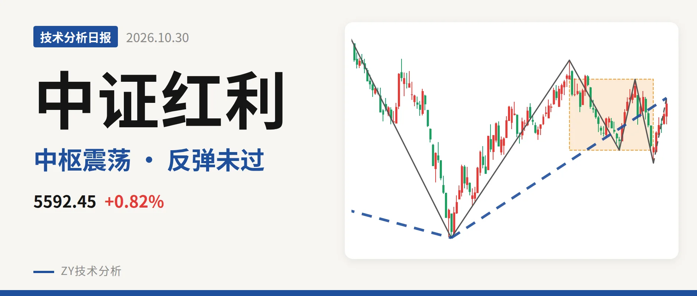
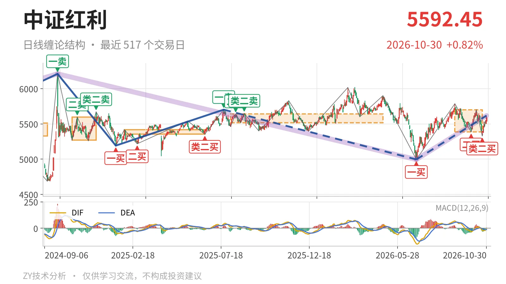
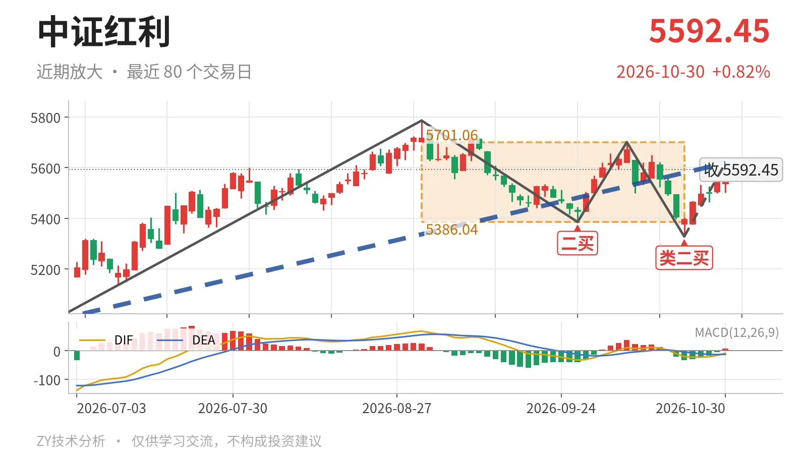

中证红利｜反抽未过5702.03点，5386上震荡

最近日线中枢 5386.04—5701.06点，收盘位于中枢之内
一句话：日线笔反弹还在延续，受5702点附近压制
🧭 走势结构：下跌段尚未走完，反弹仍在延续
当前日线线段仍处在2025年7月23日至2026年6月30日下跌线段之中，该线段尚未走完。6月30日至10月30日的上涨线段涨12.5%，属于下跌段后的反抽。最新收盘5592.45点未站上前线段起点5702.03点。更大级别看，2024年10月8日以来的下跌段也还没结束。当前只能按反弹与中枢震荡处理，不急于定为反转。最新MACD的DIF为-8.7，仍在零轴下方；10月23日以来的上涨笔红柱面积仅8，反抽力度有限。

📦 中枢与位置：价格在中枢内偏上，中枢暂未上移
最新收盘5592.45点位于最近日线笔中枢（9月1日至10月23日，5386.04—5701.06点）之内，略高于中轴5543.55点。该中枢与前一个日线笔中枢（2025年8月4日至2026年4月30日，5518.46—5639.99点）重叠，构成中枢扩展。价格距上沿约109点，距下沿约206点，只有站上5701点附近，中枢才有上移可能。
📌 买卖点：类二买后反抽未过前高，仍属笔级别
日线笔级别买点包括6月30日一买4995.49点、9月29日二买5386.04点、10月23日类二买5328.30点。类二买低点低于二买，但未破一买，买点结构没有破坏。线段级别最近买点仍是2023年10月23日二买4894.86点，本次反弹没有带来新的线段级别买点。因此这波上涨只对应日线笔级别，不构成线段转折。

⚡ 背驰：10月下跌笔新低不新弱，构成类二买
最关键的背驰发生在9月与10月两笔下跌之间。9月1日至9月29日下跌笔绿柱面积561，DIF低点-32.7；10月14日至10月23日下跌笔绿柱面积53，DIF低点-20.4。价格低点从5386.04点下移到5328.30点，但面积和DIF均未同步走弱，属“新低不新弱”。这是10月23日类二买出现的力度依据，也说明短线下跌有衰竭迹象。
🛡️ 关键位置：上方5701—5702点，下方5386点
短期结构偏中性，尚未摆脱中枢震荡。上方关键位看5701—5702点附近，即最近日线笔中枢上沿与前下跌线段起点重合区。若反抽能站稳该区域，10月23日以来的上涨笔才有机会向上离开中枢；若不能回到5701点上方，走势仍是中枢内反抽。下方看5386点附近和5328点附近。回落不破5386点，中枢震荡结构不变；若跌破5328点，则10月23日类二买被破坏，反弹结构转弱。整体结构偏中性。
⚠️ 本文为基于公开行情数据的缠论技术结构记录，由程序自动计算并生成，仅供学习交流，不构成任何投资建议。市场有风险，投资需谨慎。